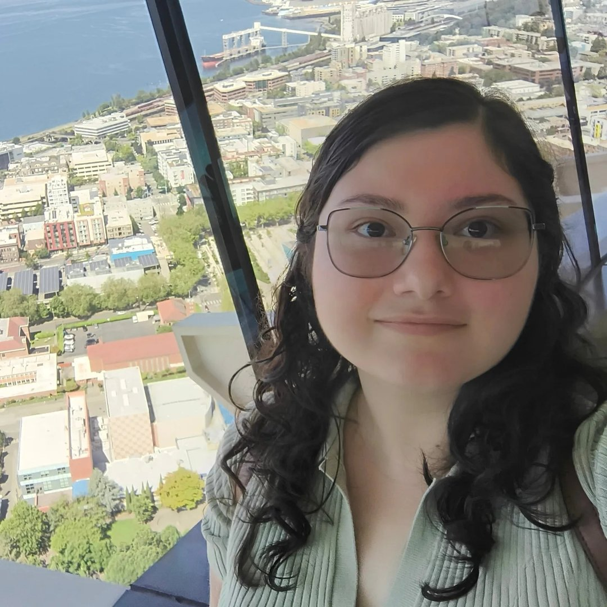

MARIANA GARZA

Summary
RN with 1 year 10 months of bedside experience with patients ranging from prematures to geriatrics.
EDUCATION
University: Universidad Autonoma de Nuevo Leon
Location: Monterrey, Mexico
Major/Degree: Bachelor's of Science in Nursing
Graduation Date: 2021
Nursing License #: 13531003
BEDSIDE HOSPITAL EXPERIENCE
Doctors Hospital East Auna | Guadalupe, N.L., Mexico
Registered nurse
February 2023-Currently
- Create assessments, diagnoses, and care plans for PICU and NICU (level II and III) patients.
- Observe and record newborn vitals, signs, symptoms, behaviors and treatment responses.
- Administer medications via IV, enteral and oral.
- Support patients’ caregivers by teaching them the treatments, conditions and at-home care.
Hospital Nogalar | San Nicolas de los Garza, N.L., Mexico
Registered nurse
September 2023-February 2023
Delivered basic care for more than 50 patients per week in the emergency unit or 2-7 patients (infants to geriatrics) on the floor working with OBGYN, pediatric and medical-surgical patients per shift.
Conducted physical examinations, including vital signs and glucose monitoring.
Documented more than 5 clinical charts a day.
Prepared and administered intravenous, intramuscular, oral, rectal and inhaled medications.
Gave support to the NICU unit, 1 patient per shift, providing oral or nasogastric tube feeding, administered medications, prepared fluid plans, blood transfusions, etc.
OTHER WORK EXPERIENCE
KZ Escuela de Ingles | Guadalupe, N.L., Mexico
English teacher
January 2021-October 2021; April 2022 to July 2022
- Designed and innovated PowerPoint and Google Slides presentations for oral exams and didactic activities as part of the new online study program.
- Evaluated performance through continuous practice, oral and written exams.
- Screened prospective teachers for hire in trial classes.
SKILLS
- Spanish (Native)
- English
- French (DELF B2)
- Microsoft Office
- Patient education
- Communication
- Active listening
- Conflict resolution
- Capacity for teamwork
Hobbies & Interests
Contact me